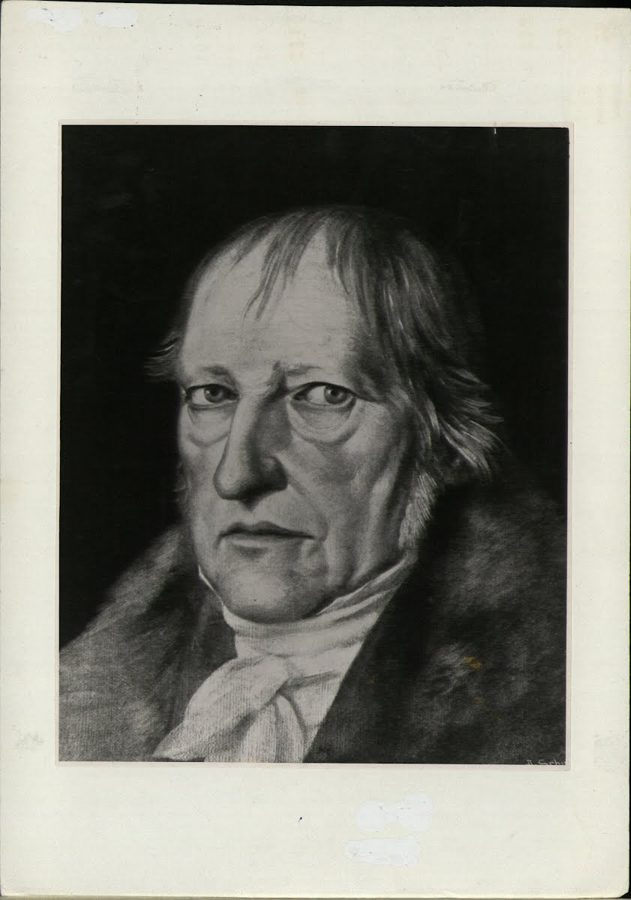
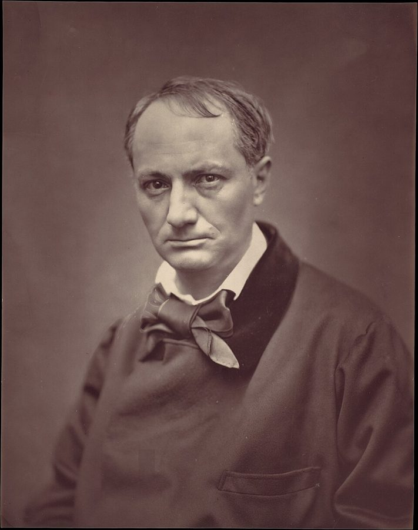

unadulterated hogwash
… Anything else was plain unadulterated hogwash …
十足的胡扯
unadulterated 本是「没掺假的」，说酒和牛奶；hogwash 本指喂猪的泔水。合起来是「纯度百分之百的废话」。
这一章很短，是第一部里的一次离题：作者把第 3 章那台「造历史」的蒙特卡洛机器拿来造句子。故事一个接一个：飞机上读一本嘲讽学者乱用科学名词的书笑出了声，一个会写后现代论文的程序，一张拼老板讲话的词组表，一段讲「声音和热」的黑格尔，超现实主义诗人在咖啡馆里折纸写诗，拉丁文弥撒。读的时候抓一个问题：作者讨厌随机拼出来的胡话，为什么又说自己喜欢被随机愚弄？
第 2 章提出另类历史，第 3 章拿出作者的蒙特卡洛「玩具」，用电脑造出成千上万段可能的历史。这一章把同一台机器从历史挪到文字上：历史能随机造，句子也能。这是第一部里最轻松的一章，没有交易员，也没有市场。§3 要黑格尔派去上抽样理论课，呼应第 3 章章旨里要历史教授去上的那堂课；§4 第 2 章那位上电视的专栏作家 George Will 又被点了一次名。下一章回到交易室。
§1 作者说维也纳学派是 Popper、后期维特根斯坦、Carnap 等人思想的源头。这句说得很松：Carnap 是学派的核心成员，Popper 却从没加入，他的证伪说正是冲着学派的「可证实」标准去的。第 7 章作者要大谈 Popper，别把他当成这个学派的人。
什么时候被随机性愚弄无伤大雅，什么时候不行？
读的时候带着这几个问题。不用先找答案，读完回来对照「检查一下理解」。
§1 从一场学界论战起头：1930 年代维也纳的一群人怎样给「有意义的话」划界，再推荐一本让他在飞机上笑出声的书，最后拿一本没有方程的生物学书当正面例子。§2 是这一章的主菜：先讲图灵测试，再把它倒过来，接着贴出他亲手用程序生成的三段「论文」，最后给你一张词组表，自己动手拼老板的讲话。§3 很短，作者顺手挑出黑格尔的一段话来挖苦，可以跳过。§4 读着会觉得「突然换了立场」：刚骂完随机拼出来的胡话，就讲起超现实主义诗人在咖啡馆里折纸写诗，再跳到宗教用的古老语言和他家乡教会的祈祷，绕了一圈才回答「这和一本讲随机的书有什么关系」，用一句意第绪谚语收尾，并预告第三部。
这一页就是原书和译本的第 4 章，一共 4 节。粗体是本站给的节名，后面是档和译本字数；下面是译本的小标题和这一节在译本电子书里开头的几个字（搜它就能跳过去），再下面是英文原文的开头。「先读」是这一章的骨架，「有空」好看、跳过不丢线，「可跳过」读不读都行。读完打个勾。
先把这一页用到、作者默认你懂的几个概念讲一遍。讲的是概念本身，作者拿它推出什么，读原书时自己看。别页讲过的概念，点链接过去看。
1920 年代中期起，维也纳大学一群哲学家、数学家和科学家定期聚会，后来叫维也纳学派，他们的主张叫逻辑实证主义。核心是一条划界标准：一句话要有意义，要么靠逻辑和定义就能判真假（「2+2=4」「单身汉都没结婚」），要么原则上能用观察去核对（「今天北京下雨」）。两样都不是的，比如「宇宙的本质是绝对精神」，他们认为不是说错了，而是什么都没说。
这条标准后来碰上麻烦：「所有天鹅都是白的」这种全称的话，看到多少只白天鹅也证实不了。Popper 因此主张改用「能不能被推翻」来划分科学和非科学，这是第 7 章的证伪。
在这一页：§1 作者用这两类命题开场，顺手提到它和黑天鹅问题的关系；§4 他又引维也纳学派对黑格尔式哲学的评价。
1950 年 Turing 发表论文，把「机器能不能思考」换成一个能操作的问题：让一个人隔着屏幕和两个对象打字聊天，一个是人，一个是机器；提问的人要是分不出哪个是机器，就可以说机器有智能。他叫它模仿游戏，后来通称图灵测试。
「反向图灵测试」是作者自己的用法：一台公认没有智能的电脑，如果能随机拼出被人当成某人手笔的文字，就可以说那个人没有智能。今天英文里说 reverse Turing test，一般指验证码（CAPTCHA）：由机器出题，判断屏幕前是人还是程序，和作者的意思不同。
在这一页：§2 的核心。作者说它是图灵测试「反过来」，读的时候想一想：原来那句话反过来，是不是还成立。
程序员熟悉的上下文无关文法就是这种东西：写几条改写规则，从「句子」开始，一层层把抽象的成分换成更小的成分，直到全是具体的词；每一步有几种换法，就随机挑一种。「递归」是说一条规则可以套着自己用，名词短语里还能再套名词短语，句子就能一直变长。
这样造出来的句子语法一定对，意思却没人管：规则只管词放在哪儿，不管词说的是什么。下图是本站随手写的几条规则造一句话的过程。
在这一页：§2 作者说的「蒙特卡洛产生器」就是这样造句的，他贴出的三段文字都出自这种程序。
按在书里出现的顺序排，标题前是节号。只讲到读懂这一页需要的程度。
书里说这一派「1930 年代」起于维也纳的「一群物理学家」。其实聚会从 1920 年代中期就开始了，主持人是哲学家 Moritz Schlick，核心成员有哲学家 Rudolf Carnap、社会学家 Otto Neurath、数学家 Hans Hahn，1929 年他们发表了宣言。Popper 住在维也纳、常和成员辩论，却从没加入，学派里有人叫他「官方反对派」。维特根斯坦早年的《逻辑哲学论》是学派反复研读的书，他本人也不是成员；他的后期哲学转过来批评自己早年的看法。所以「学派是这几个人思想的源头」，最说得通的只有 Carnap。
「科学战争」是 1990 年代美国学界的一场论战：一边是部分人文学者和科学社会学家，强调科学知识也是社会建构的；一边是科学家，说对方在拿科学名词唬人。1996 年 Sokal 向文化研究期刊《社会文本》（Social Text）投了一篇故意胡写的论文，讲量子引力的「解放意义」，登在一期以「科学战争」为题的专号上，随后他自己在另一份杂志上说穿。作者推荐的书是 Sokal 和比利时物理学家 Jean Bricmont 合写的，法文版 1997 年、英文版 1998 年出，译本：「知識的騙局」。1998 年 Dawkins 在《自然》杂志上写文章评这本书，还提到了 §2 那个论文生成器。
图灵测试是什么，见「先用中文过一遍」的概念块。译本：「杜靈」是台湾的旧译，大陆通译「图灵」。
作者玩的程序是 Andrew C. Bulhak 1996 年在澳大利亚 Monash 大学写的「后现代主义生成器」，跑在他写的 Dada Engine 上，用递归文法拼出整篇后现代风格的论文，网上一直有免费版本可以玩。作者贴的三段里，Rushdie（小说家）、Sartre（法国哲学家）都是程序随机填进去的名字。作者点名的 Jacques Derrida（1930–2004）是法国哲学家，「解构」的提出者；Camille Paglia（生于 1947 年）是美国文化评论家，1990 年出版《性面具》（Sexual Personae）。有意思的是，Paglia 本人正是 Derrida、Lacan、Foucault 这批法国理论最尖刻的批评者之一，被作者和 Derrida 归作「一伙」，她未必同意。

作者引的那段出自黑格尔《自然哲学》（他的《哲学全书》第二部分）第 302 节，是 Popper 在 1945 年的《开放社会及其敌人》第二卷里自己译成英文、拿来当胡话样本的。也就是说，作者读到的是 Popper 挑出、Popper 翻译的一段，中文读者读到的又隔了一层翻译。
超现实主义是一战后在巴黎兴起的文艺运动，想绕开理性，从梦、潜意识和偶然里找诗。这个接龙游戏大约 1925 年前后在巴黎玩起来：每人在纸上写一个成分，折起来传给下一个，谁也看不到前面写了什么。游戏的名字就来自第一次玩出来的那句「精致的尸体将喝新酒」；流传的法文通常是单数（Le cadavre exquis），书里写成了复数。后来画家也这样玩，每人画身体的一段，拼成一个怪物。
「小亚细亚的盲人」指荷马，传说中《伊利亚特》《奥德赛》的作者。天主教的弥撒原来一律用拉丁文；1962–1965 年的第二次梵蒂冈大公会议允许改用各地语言，到这本书出版时约四十年。作者说的是「或许有人会怀疑」这导致了信仰滑落，只是一个疑问。作者的家族属于安提阿希腊正教会，信徒多在黎巴嫩和叙利亚；Koiné 是新约用的古希腊共通语。他说教会把祷文译给说阿拉伯语方言的信徒时，选的是古典阿拉伯语（《古兰经》的语言），不是当地人日常说的话。

Baudelaire（1821–1867），法国诗人，《恶之花》的作者；Saint-John Perse（1887–1975），法国诗人、外交官，1960 年获诺贝尔文学奖；Elias Canetti（1905–1994），用德语写作的作家，1981 年获诺贝尔文学奖；Borges（1899–1986），阿根廷作家，以迷宫、图书馆和镜子一样的短篇出名；Walter Benjamin（1892–1940），德国批评家。后三位作者说是晦涩、常常读不进去的作家。作者拿他们和 CNN 主播、第 2 章那位专栏作家 George Will 对比。
读英文原文时值得停一下的词和句：交易员的行话、作者的反话和双关、熟词生义。灰色斜体是原句里连续的几个词，在英文电子书里搜它就能找到；标「每个字都认识」的，是每个词都眼熟、合起来意思却变了的，最容易读错。点「记下」收进词本。
对着译本读这一章时，下面这些地方会把人读歪。方框里是译本的原句，在译本电子书里搜它就能找到；灰色斜体是英文原文那一处。只收意思错了、反了、漏了的，措辞上的出入和台湾用语不收。全书的勘误汇总在译本勘误。
… at the origin of the development …
译本：「和其他許多人所提上述觀念的發祥地」
原文只说维也纳学派是 Popper、后期维特根斯坦、Carnap 等人思想发展的起点（这句本身就松，见「书里的人和背景」）。译本加了「上述觀念」，读来像这几个人提出了「两类命题」的划分；Popper 恰恰反对它，读到第 7 章会对不上。
… random references to such grandiose concepts …
译本：「在文章後面塞進一大堆參考文獻」
这一段说的是在正文里撒「测不准原理」「哥德尔定理」这类名词冒充科学。译本两处都把它说成文末的参考文献，读来像在说书目开得长。读的时候把它理解成「满篇科学名词」。
… whether what he is saying has value …
译本：「保證不管他說什麼，都有價值」
原文：随机拼一篇讲话，是为了看看老板说的到底有没有价值，还是一个运气好坐上那个位子的人说的包装过的空话。译本说成了保证他说什么都有价值、胡说也无妨，这个游戏的用意就丢了。
… The heating up of sounding bodies …
译本：「就像身體被打或摩擦」
黑格尔这一句说的是：发声的物体，和被敲打、被摩擦的物体一样，会发热。这是一个物理观察，Popper 也说这是全段唯一读得懂的一句。照译本读，像在说人挨打，这段话显得比原文更古怪。
… behave officially as a no-nonsense hyperrealist …
译本：「表現得像嚴肅的超現實主義者」
作者说自己对外以一个只认事实、专找运气作用的现实派自居。「超現實主義」是 surrealism，意思正相反；两段之后真的超现实主义诗人就出场了，照译本读，作者像是和他们一伙，「一方面……另一方面」的对比就没了。
… exquisite cadavers shall drink the new …
译本：「吟詩連句喝新酒」
原文这句诗的主语就是 exquisite cadavers（精致的尸体），游戏因此得名，诡异的字面正是它的诗意。译本把游戏叫「連詩遊戲」、把诗译成「吟詩連句」，尸体不见了；原文还附了一行法文，译本也没有，下一段说法文更有诗意，就无从对照。
… uncorrupted by the no-nonsense tests of …
译本：「聖潔的語言歷經日常使用的嚴峻考驗」
原文说：圣语之所以没被磨坏，正因为它不在日常使用里接受那种务实的检验；下一句「让语言远离日常使用」说的是同一件事。译本说成经受住了日常使用的考验，和下一句、和全段的道理都反了。
… of choosing classical Arabic, an entirely …
译本：「也就是選擇古典阿拉伯語這個完全死掉的語言」
原文：教会本要把祷文译成当地信徒日常说的阿拉伯语方言，结果选了早已没人说的古典阿拉伯语；作者说这个错误歪打正着。译本用「也就是」把方言和古典阿拉伯语等同起来，读不出错在哪里，也就读不出幸运在哪里。
… human nature dictates a need for …
译本：「人性都需要一些小確幸」
法语字面是「可爱的小罪过」，指无伤大雅、明知不该却戒不掉的小癖好，比如睡前一块巧克力。作者要说的是人需要一点不讲理的东西，接着才讲迷信和读诗。「小確幸」是微小而确实的幸福，丢了「不理性」这一层。
… obscure (and often impenetrable) writers like …
译本：「沒沒無聞（而且經常不知所云）」
Canetti 得过诺贝尔文学奖，Borges、Benjamin 名气都很大。作者说的是他们的文字难懂，括号里的 impenetrable（读不进去）是同一层意思的加强。照译本读，像是作者偏爱冷门作家，同事不懂的就成了「这些人是谁」。
读完这一章再看。下面是作者在这一章里的主张，由本站按主张之间的逻辑重新组织，不按原书的顺序；每条后面是节号，拿不准就回书里那一节再读一遍。
他提出一种「可以设想」的区分：科学家通常认得出同行写的东西，文学知识分子却分不出科学家和油嘴滑舌的外行，后者爱撒「测不准原理」这类名词，常常用得和原意相反。反面的例子见 Sokal 那本书；正面例子是 Dawkins，一个方程都没有，读来却像从数学译过来。严谨可以用最朴素的英文写出来。
§1这是他的反向图灵测试：图灵说骗得过人的电脑可以算有智能，他说反过来「应该」也成立，一个人的话如果能被没有智能的电脑模仿、还骗过了人，就可以说这个人没有智能。他说蒙特卡洛产生器「有时」能造出被当成文学论述的东西，答案「似乎」是能：有 Sokal 的恶作剧，有他自己用达达引擎玩出来的三段。
§2他说有些商业讲话本身就属于这一类，只是没那么优雅；拿一张词组表随机挑五句串起来，要是和老板刚讲的太像，就该换工作了。黑格尔更糟，连蒙特卡洛引擎都没那么随机；他还把黑格尔式思想和「科学的」历史观、马克思主义政权连在一起，建议这些人先去上一堂抽样理论课。
§2 §3他说自己对外是只认事实的现实派，私下却有各种迷信，线划在美学上：语言的模糊会打动人，何必抗拒。超现实主义诗人随机拼出的诗有的美得惊人，来历不重要；把诗拆成逻辑论证去检验，会不同程度地剥掉它的力量，有时剥得太多。圣语远离日常使用才保住了力量；天主教改用本地语言，他说或许有人会怀疑这让信仰滑落。
§4他说人性需要一点不讲理的小癖好；日常细节不必理性，只有会伤害我们、威胁生存的事才需要。现代生活却似乎让人在宗教和私人行为上较真，在投资这种由随机支配的事上随便：同事不懂他为什么读波德莱尔，自己却听电视名嘴、凭开名车的邻居一句话买股票。要被随机愚弄，就挑美的、无害的那种。
§4合起来：一段话能不能被随机拼出来，是检验它有没有内容的一个快办法；可在诗和艺术里，随机拼出来的照样美。作者要读者带走一条分工：要命的事讲理，不要命的事尽管享受被骗。
Rhetoric can be constructed randomly, but not genuine scientific knowledge.— §2。本站译：修辞可以随机造出来，真正的科学知识不行。
一句下判断的话，口气斩钉截铁。关键词是 genuine：他守住的是「知识」，不是「文风」。容易读成「看文风就分得出真假」，其实他的意思是，像科学的句子可以拼，靠得住的推理拼不出来。译本：「我們可以用隨機的方式寫成華麗的文詞」把 rhetoric 落在辞藻上；原文的修辞更接近「说服人的话术」，华丽不华丽倒在其次。
If I am going to be fooled by randomness, it better be of the beautiful (and harmless) kind.— §4。本站译：要是我注定被随机性愚弄，那最好是美的（而且无害的）那一种。
自嘲加一个打比方，从 §4 那句意第绪谚语「非吃猪肉不可就吃最好的」改过来。关键在括号里的 harmless：美只是一半条件，另一半是不伤人。容易被读成「被骗也没关系」；作者的意思是被骗要挑场合。译本：「那麼最好是美妙（而且無害）的那一種」括号照原文留着，意思到了。
这本书 2004 年出第二版，书里讲的多是 1980–2003 年的事。下面挑出这一页里能被后来的研究或事情检验的说法，分「书里 / 当时 / 今天」几栏，并给一个结论。结论判的是标题里「书里的说法：」后面那一句。全书的这一节汇总在今天怎么看。
读完作者的主张，再看它站不站得住。每一块摆出三样：主流怎么看，作者怎么看，本站的评论。最后一句是本站对这一页的总体判断。
主流看法：图灵测试本身争议不断：哲学家 John Searle 1980 年的「中文屋」论证说，骗得过人不等于理解。今天说 reverse Turing test，通常指验证码，由机器判断对面是不是人（von Ahn 等人 2003 年给验证码起名 CAPTCHA，全称里就有「图灵测试」）。
作者的看法：骗得过人的电脑可以算有智能，反过来应该也成立：话能被电脑随机模仿的人，可以说他没有智能。§2
本站的评论：推不出来。机器能拼出同样的话，只说明写这种话用不着智能，不说明写的人没有智能。它更像一条好用的经验法则：一段话里的词随便换、意思不变，说明它没说什么，词组表就是这么用的。但它检验的是文风，SCIgen 和今天的大语言模型都说明文风能被模仿；作者 §1 那条标准，推理严不严谨、能不能用大白话说清，才更耐用。
主流看法：黑格尔至今是哲学系的必读。二十世纪的分析哲学一度对他很不客气，Popper 1945 年的《开放社会及其敌人》是代表；但 Walter Kaufmann 在 1950 年代就写长文反驳 Popper 的黑格尔读法，说它误解太多；后来 Robert Brandom、John McDowell 等分析哲学家又把黑格尔请了回来。
作者的看法：黑格尔写的是行话，连蒙特卡洛引擎都没那么随机；黑格尔式思想产生了马克思主义政权。§3
本站的评论：靶子是对的：用术语遮住空洞，读者有权要求说清楚。但例子是 Popper 挑出、Popper 翻译、再被作者摘出来的一段自然哲学，离开了上下文；它的最后一句说发声的、被敲打摩擦的物体会发热，其实是个观察。从黑格尔到马克思主义政权，中间隔着马克思、列宁和一百年的历史，作者一句话带过，这是修辞，不是论证。
主流看法：心理学和经济学后来也走到相近的地方。Herbert Simon 1950 年代提出「有限理性」：人不求最优，只求够好。Gerd Gigerenzer 一派的研究认为，简单的经验法则在很多日常决定里不比精细计算差；Kahneman 一派研究的则是这些捷径在什么场合会系统地出错，投资是其中之一。
作者的看法：日常细节不必理性，只有会伤害我们、威胁生存的事才要；现代人却反过来，在投资上最随便。§4
本站的评论：这是这一章最好用的一句话，程序员很熟悉：核心路径的代码逐行审，边角的脚本随它去。难处在事先分清哪件事「要命」：这本书别的章一直在说，人最容易看错的正是平时风平浪静的风险。所以这条分工要和全书一起用：先学会看出哪里要命，再决定在哪里放松。
本站的总体看法：这一章是一次轻松的离题，好玩胜过严密。「能被随机拼出来的话没有内容」是一把好用的小刀，但只切得动文风，切不动推理；骂黑格尔、骂后现代多半是修辞。最值得带走的是 §4 那条分工：要命的事讲理，其余的尽管享受。
先在心里答，再点开。答错的那题，回书里把对应那一节再读一遍。
演绎的（从定义清楚的公理推出来，如 2+2=4）和归纳的（能用经验、统计之类核对）。这句属于归纳类。作者提醒，归纳的话可能很难、甚至无法证实，后面讲黑天鹅时会再谈。
书里没有一个方程，读来却像是从数学语言翻译过来的。他要说明科学在于方法和推理的严谨，不在公式和名词，最朴素的散文里也认得出来。
照作者的说法，这篇讲话没有内容，可能只是一个运气好坐上位子的人说的漂亮空话。本站的补充：它说明这种讲话用不着智能就写得出来，不说明讲话的人没有智能。
他说黑格尔那段话比随机产生器还随机：机器乱拼词，要试很多次才可能碰巧把热和声音放进同一句，黑格尔一下就写出来了。言下之意，那段话就像随机拼出来的。
教会把祷文译给说阿拉伯语方言的信徒时，选了早已没人说的古典阿拉伯语。作者觉得这样祷文没被日常语言磨损，保住了美；他的家人因此用两种死去的语言祈祷。
他把理性用反了。衣服颜色伤不到人，迷信一点无妨；积蓄押在自己一无所知的股票上，会伤到生存，正该讲理。作者说现代人在受随机支配的事上最不讲理，就是这个样子。
用一句话说这一页：
想一想：你在哪些事上允许自己不讲理（一个小迷信、一个仪式、一本读不懂也爱读的书），在哪些事上要求自己严格讲理？这两类事的分界，和它们会不会伤到你，对得上吗？
读过又忘了，从这里想起来。挑的是这一页最值得记住的故事和说法，不按原书顺序；每条后面是节号，想细看就回书里那一节。全书各页的这一节都收在全书回顾。
一句话：能被随机拼出来的话多半没有内容；被诗的随机愚弄无妨，理性留给会伤到你的事。
作者在飞机上读 Sokal 嘲讽学者乱用科学名词的书，笑得又响又频繁，周围的乘客一直在小声议论他。
§1作者用一个会生成后现代论文的程序玩了一阵，贴出三段语法完美、毫无意思的句子。把图灵测试倒过来：能被电脑冒充的话，就没有内容。
§2从「股东价值」「短痛换长利」这类词组里随便挑五个，串成一篇讲话。作者说，要是听着太像你老板刚讲的，就该找新工作了。
§2作者挑出 Popper 译的一段黑格尔论声音和热，说连蒙特卡洛引擎都没这么随机，建议这些思想家放出去之前先上一堂抽样理论课。
§3超现实主义诗人在咖啡馆里轮流往折起的纸上写一个词，拼出的第一句诗成了游戏的名字。作者说这种诗有的美得惊人，来历无所谓。
§4借一句意第绪谚语：既然免不了被随机愚弄，就挑美的、无害的那种；理性留给会伤到你的事。
§4